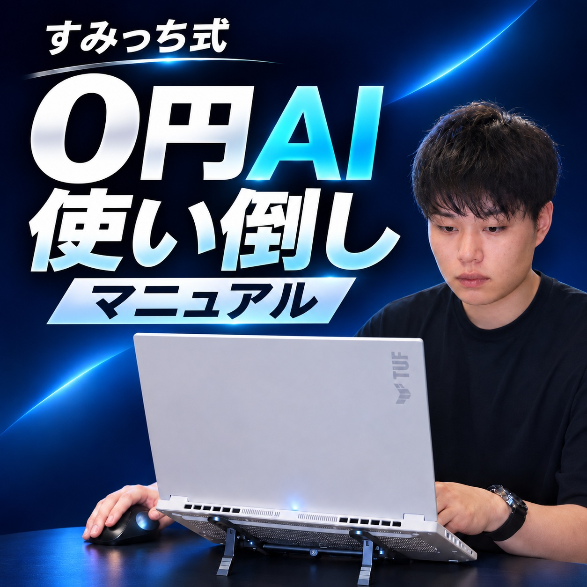
課金で迷っているなら、まず無料で1本。
僕もAIに課金してきました。AI副業に興味はあるけど、課金はちょっと…という人こそ、まず無料で試してみてほしい。
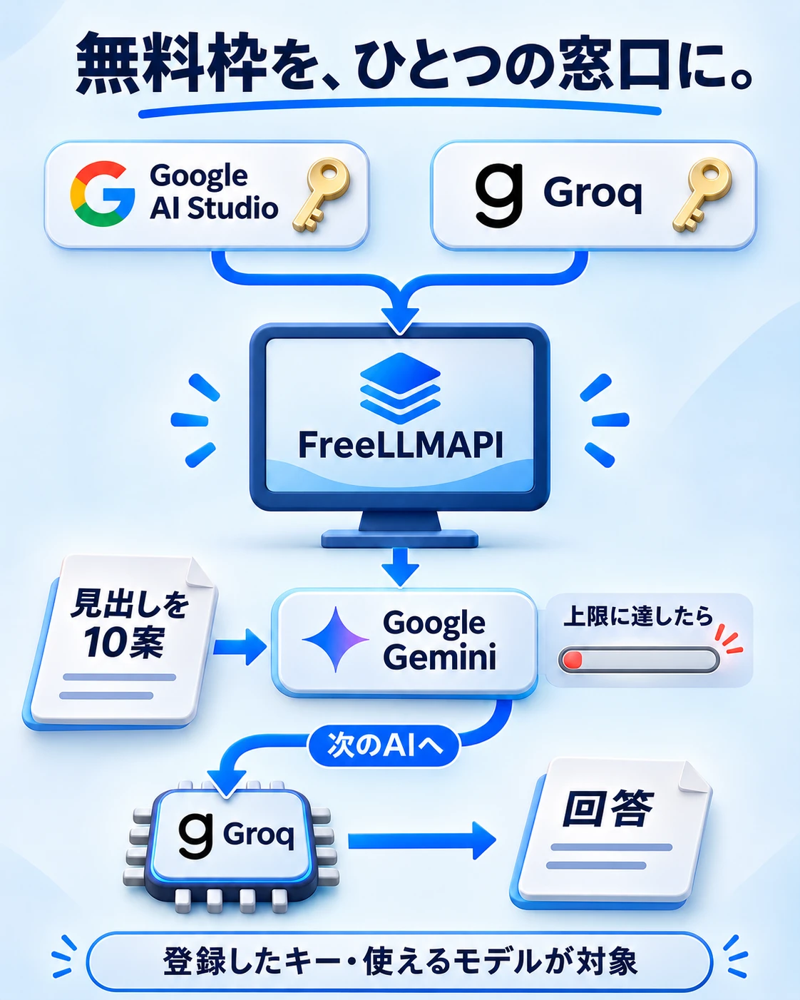
今回は、見出しを1本作って保存。Googleだけで始められます。
無料で使える範囲
無料なのはツール本体と、各社が設定したAPIの無料枠です。ChatGPTの有料プランやClaude本体が無料になるものではありません。GPT-OSSなどの公開モデルは、対応する提供元の条件で使います。
動画の「毎月70億」は各社の枠を合わせた規模の話で、１人が必ず使える量ではありません。対応数・利用量・モデルは更新されます。Premiumのカタログ即時更新は別の有料機能で、この練習には購入不要です。
開発元は個人の試用・学習を想定しています。この教材では副業に必要な文章づくりを練習します。受託業務や公開サービスの本番運用は、各社の条件と有料APIを別途確認してください。
アプリをPCに入れる
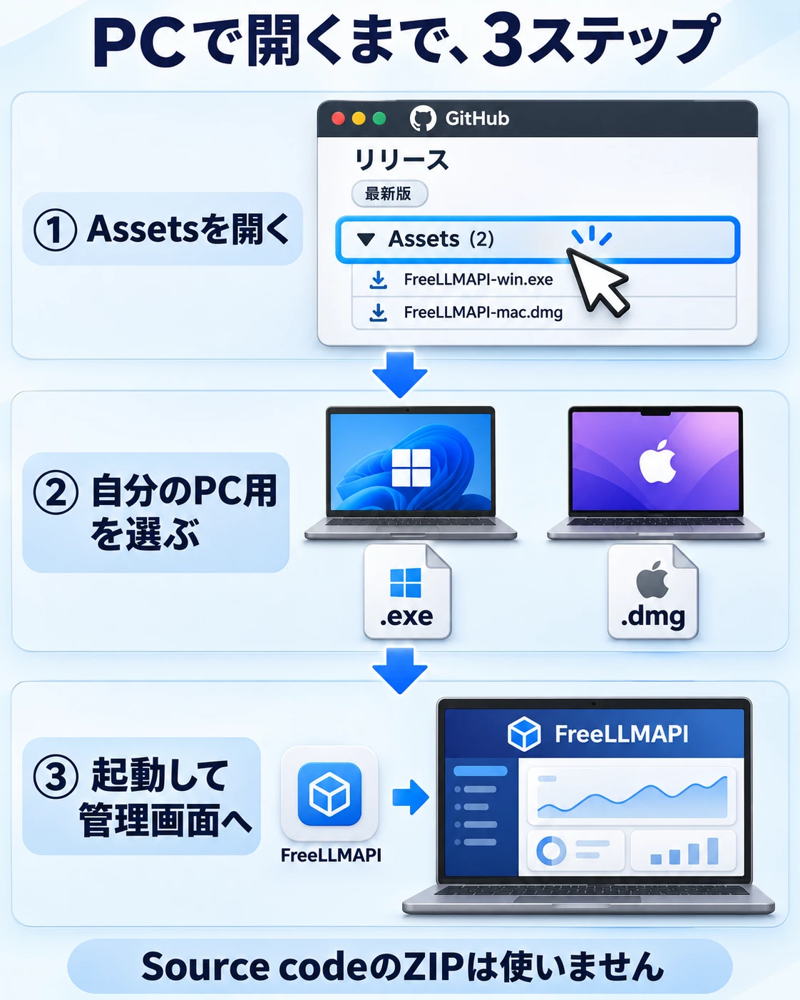
ダウンロード後の開き方
- 「Assets」が閉じていれば開きます。「Source code」のZIPは今回使いません。
- WindowsはPCのCPUに合うインストーラー。MacはApple Siliconならarm64、Intelならx64を選びます。「このMacについて」でチップを確認できます。
- ダウンロードしたファイルを開き、表示される案内に沿って入れます。MacではアプリをApplicationsへ移します。
- FreeLLMAPIを起動し、トレイ／メニューバーからダッシュボードを開きます。通常の接続先は http://localhost:3001 です。別ポートが表示されたらその値を使います。
アプリが開かない場合は配布元・対応OS・CPUを確認してください。OSの警告を無条件に解除する必要はありません。
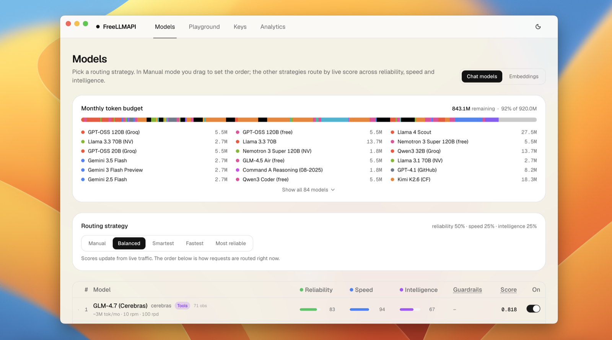
Googleのキーを登録
Google AI Studioで作成。「Free」を選択。
APIキーを用意するキーの作成と無料枠の確認
- 自分のGoogleアカウントでログインします。初回の規約は内容を確認して進めます。
- 既存のキーがあれば、紐づくプロジェクトのBilling TierがFreeか確認します。有料の既存プロジェクトはこの練習では選びません。
- 新規なら「Create API key」から名前とプロジェクトを指定して作成します。表示に従って新しいプロジェクトを作るか、無料の既存プロジェクトを選びます。
- キーをコピーし、次のFreeLLMAPIの入力欄だけに貼ります。チャットやSNSへ貼らないでください。
対象地域・アカウント・モデルによって利用条件が異なります。Freeでも利用できない場合は、課金せず公式の条件を確認してください。
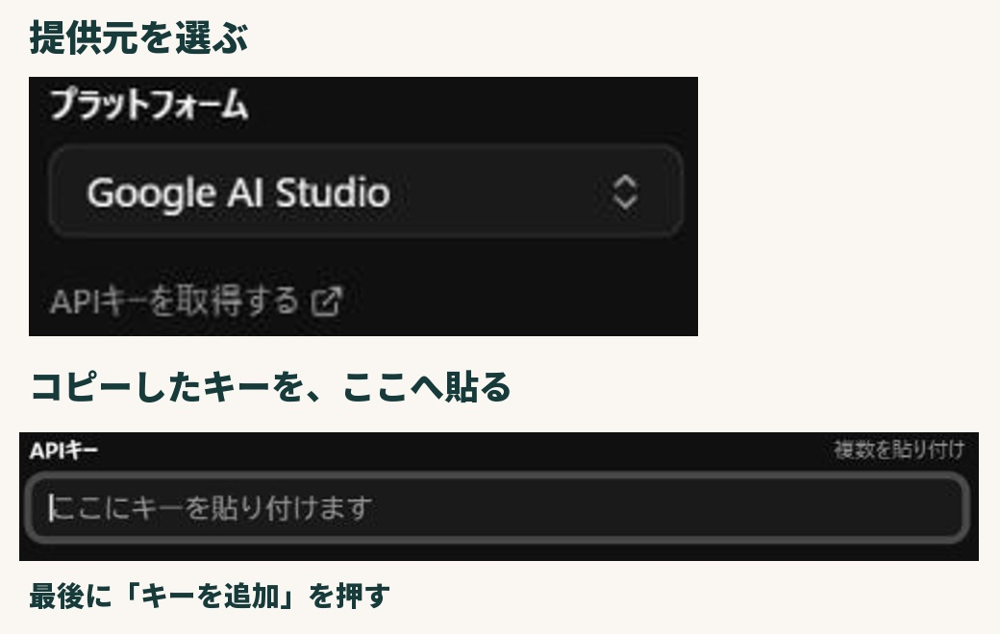
「healthy」を確認したら、次へ。
追加画面の項目と確認
「Provider key」で提供元を選び、「API key」にコピーしたキーを貼ります。Labelは自分で分かる呼び名です。「Add key」で追加し、一覧の状態を確認します。UIを日本語表示にしている場合は対応する訳語になります。
「healthy」が接続確認の目印です。エラーならコピー漏れ・キーの制限・プロジェクトの利用条件を確認。保存されたことだけで返答まで成功したとは判断せず、次の工程で試します。
見出しを10案出す
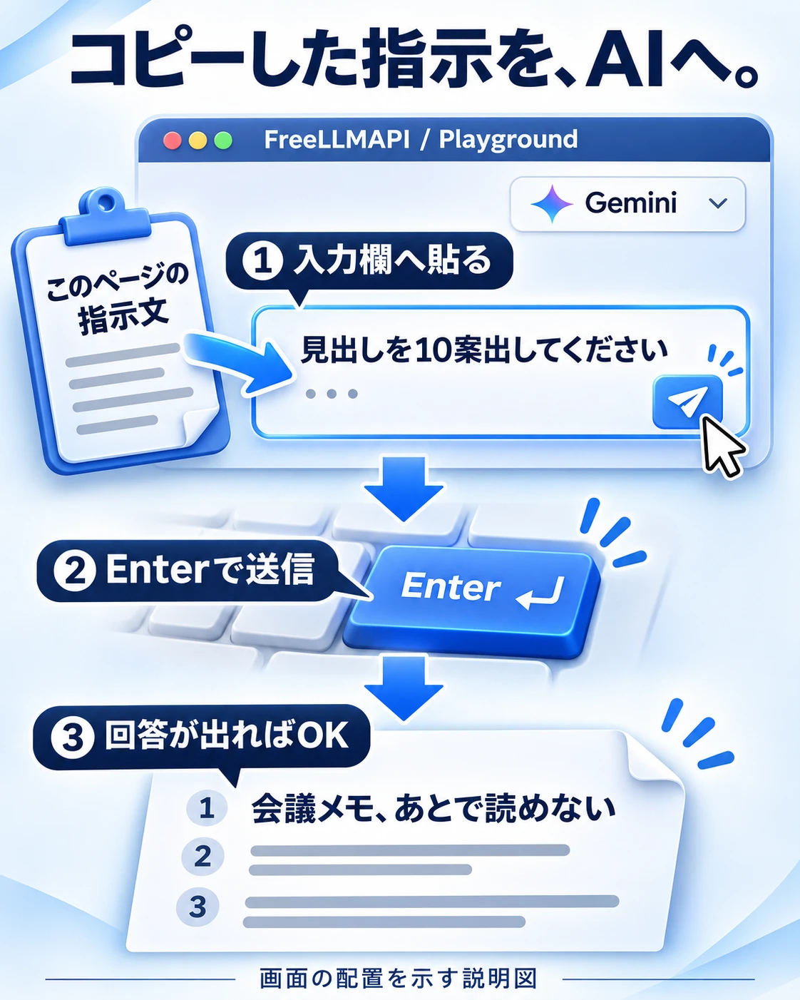
貼付先：Playground。無料のGeminiを選択。
指示文の全文
会社員向けに「仕事のメモをAIで整理する方法」を紹介します。 Instagramリールの冒頭で使う見出しを10案出してください。 1案は20文字以内。読む人が困っている場面を具体的にし、成果や収益を保証する表現は避けてください。 実際には試していない体験談や、根拠のない数字は入れないでください。 番号付きで見出しだけを出力してください。
実画面・モデル選択・エラー対処
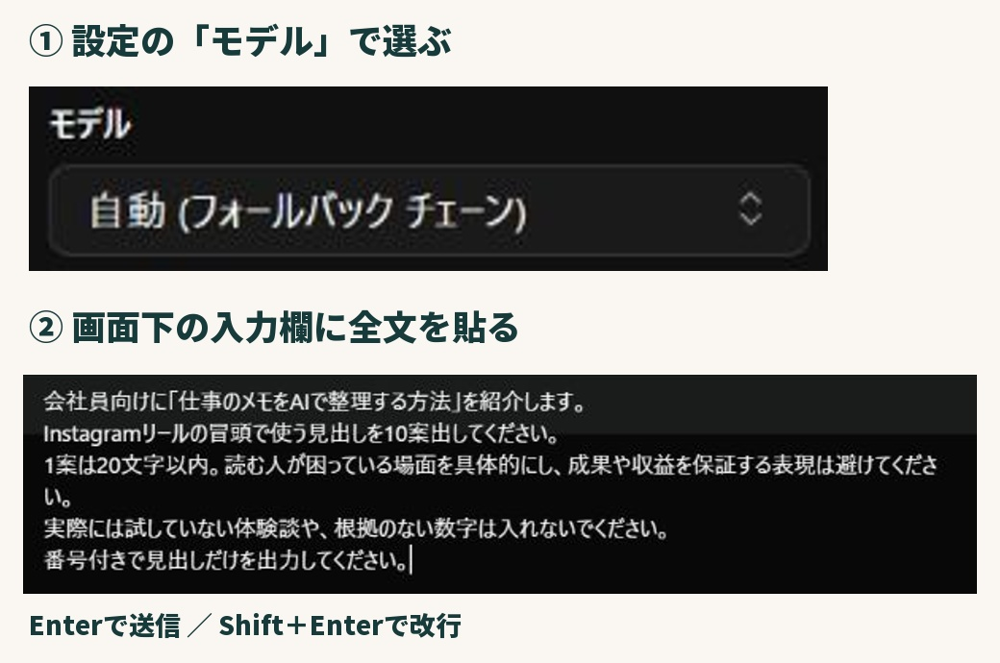
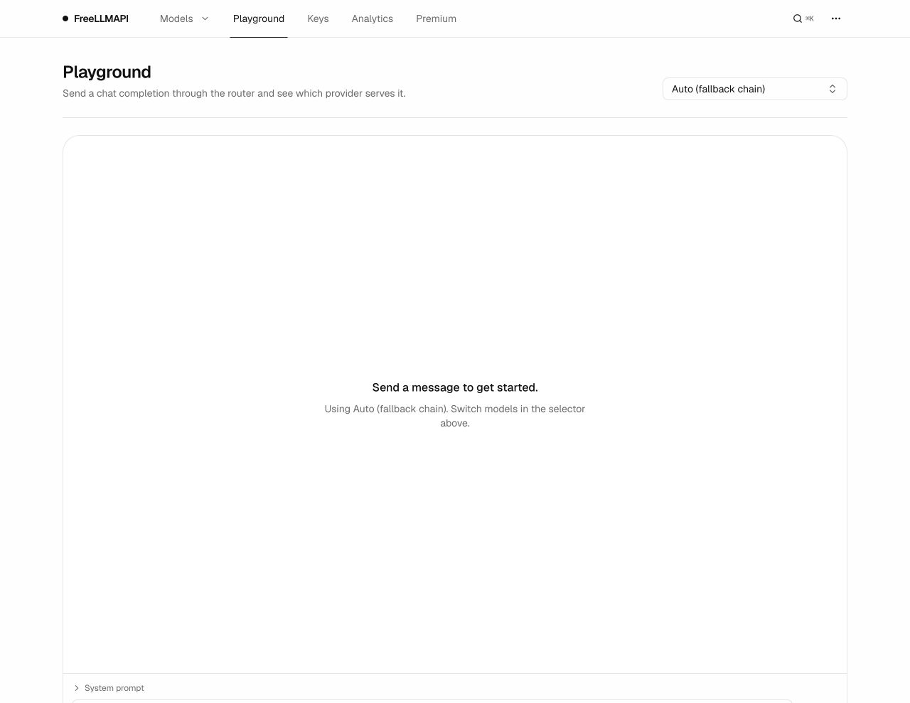
現在の画面では、モデル選択は設定パネルの「モデル」、入力欄は会話画面の下側です。返答の内容と、実際に使われたモデル名を見ます。無料枠を複数登録している場合はAutoで切り替えを使えます。
キーが未接続なら02へ戻ります。429は利用量や頻度の上限を示します。時間を置くか、利用可能な別の無料モデルを選びます。すべての枠が尽きた場合、切り替えても続けられません。401/403はキー・権限・利用条件を確認してください。
練習には会社・顧客の実データを使いません。
AIの案を、投稿に使える1案へ
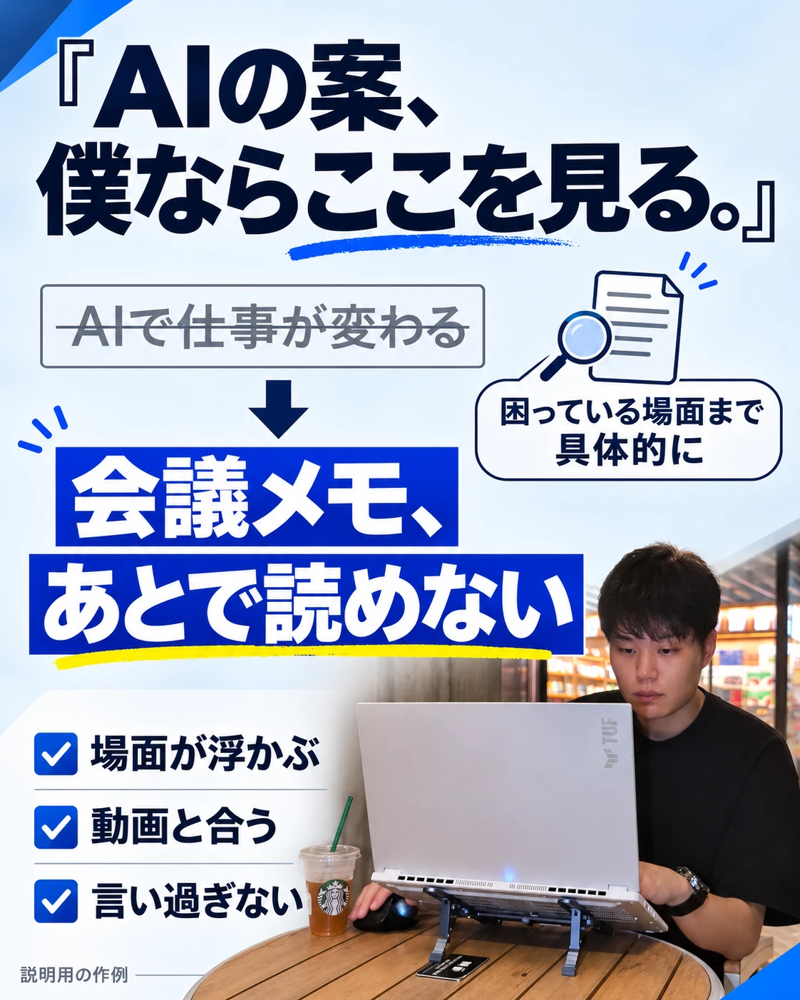
指示文の全文
直前に出した10案を、次の条件で見直してください。 題材は「会社員が仕事のメモをAIで整理する方法」です。 ①読む人がいつ何に困るか想像できる ②動画の内容と一致する ③1案20文字以内 ④成果・収益の保証、根拠のない数字、架空の体験がない 条件に合う3案を選び、選んだ理由を各1行添えてください。 条件を満たさない箇所だけを直し、問題がなければ残してください。 最後に「保存する見出し」として、最も具体的な1案を番号なしで出してください。
同じ会話へ送信。最後は自分で内容・20文字以内を確認。
10案の見本を見る
以下は説明用に作成した見本です。実行するモデルによって回答は変わります。
- 会議メモ、あとで読めない
- 散らかったメモをAIで整理
- 会議の決定事項、どこだっけ
- メモから担当と期限を整理
- 仕事のメモ、探す前に整理
- やることが埋もれるメモに
- 会議後のメモを３つに分ける
- メモを見ても動けないとき
- 書いたメモを次の行動に
- AIでメモを整理する最初の一歩
選んだ1案を保存
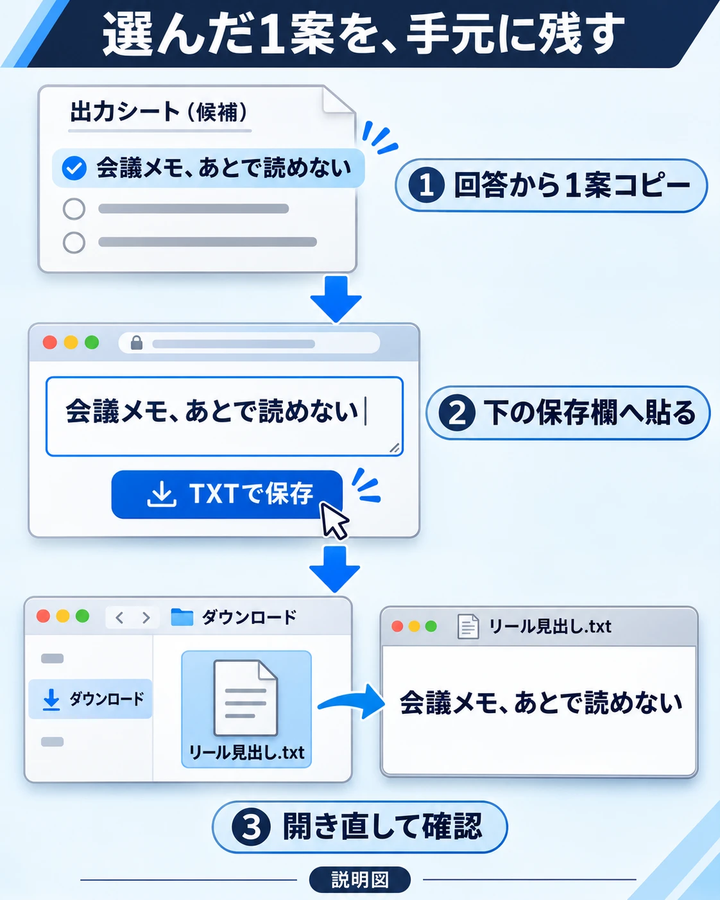
保存名：リール見出し.txt
指示文3本と見本も、まとめて手元へ。
練習キットを保存（ZIP）PC用：ZIPを保存 → すべて展開 → はじめに.txtを開く。
次は、同じ題材で台本を作る
同じPlaygroundへ、下の指示文を送ります。
指示文の全文
次の条件で、Instagramリールの30秒用の練習台本を作ってください。 テーマ：会社員が仕事のメモをAIで整理する方法 見出し：会議メモ、あとで読めない 伝える手順：自分で書いた練習用メモを用意する→AIに「決定事項・担当・期限」に分けてもらう→元のメモと見比べる 会社や顧客の実データは使いません。分からない担当や期限を推測で補わず「未確認」にします。 冒頭→手順→確認の順で、話すセリフと映すものを分けてください。 実績・体験談・作業時間の短縮率・収益は創作せず、成果を保証しないでください。
もう１社追加して切り替える
 Groq
GroqGroqCloudのAPI Keysでキーを作り、FreeLLMAPIのKeysでGroqを選んで登録します。GPT-OSS等の対応モデルと無料枠は、その時点の公式モデル一覧で確認してください。
Modelsのチャットモデル画面で「Fallback Chain」の順を確認。最初のモデルが制限やエラーになった際、使える次の候補へ進みます。Autoを選んだときの動作と、実際の提供元表示を確認してください。キーを登録していない会社の枠が自動で使えるわけではありません。
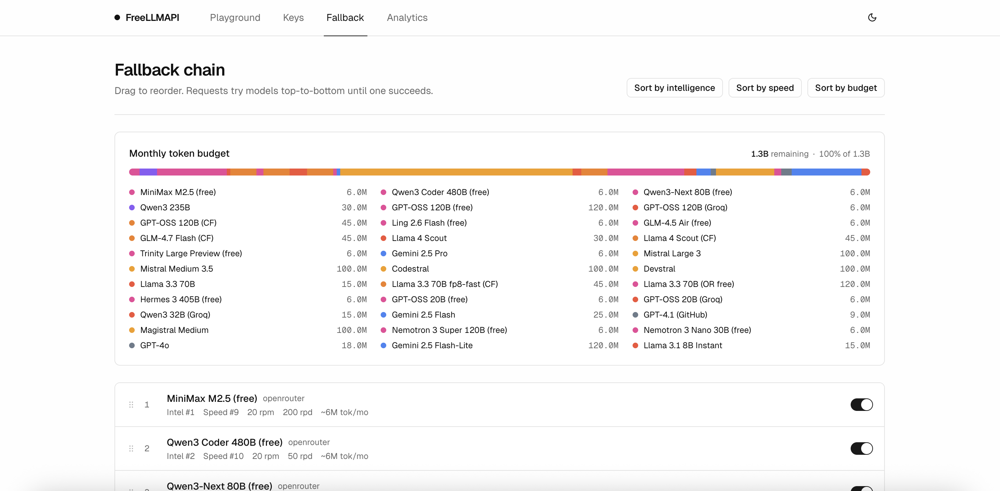
Claude Codeにつなぐ場合
PCでClaude Codeを使っている方向けの応用です。中で動くのは登録したモデルで、Claude本体が無料になるわけではありません。
- 先にPlaygroundで返答が得られることを確認。
- Keysの「Unified API key」で共通キーを取得。これはGoogleのキーとは別です。
- FreeLLMAPIの「Agents」からClaude Codeを選び、表示される現在の接続手順を確認します。
- 設定を書き換える前にバックアップし、現在のモデル・キー・接続先を控えます。キー入りのコマンドは公開チャットへ貼らず、自分のPCのターミナルで扱います。
- 再起動後に短い依頼を試し、FreeLLMAPIのログで接続先を確認。元へ戻す場合はバックアップから復元します。
コマンドや対応条件は更新されるため、公式のClaude Code接続手順を参照してください。
参照先・無料枠の確認
FreeLLMAPI公式 ／ 対応モデル ／ 無料とPremiumの違い ／ Gemini APIの無料枠
FreeLLMAPI画面画像は公式リポジトリ掲載素材（MIT）。人物はすみっちの提供素材。練習見本は本教材の説明用で、売上やツールの実応答を示すものではありません。